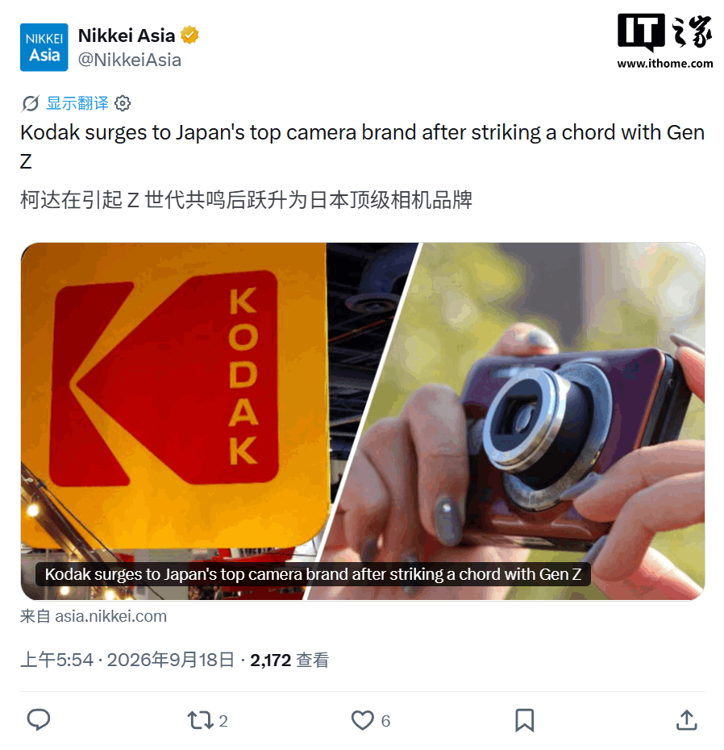
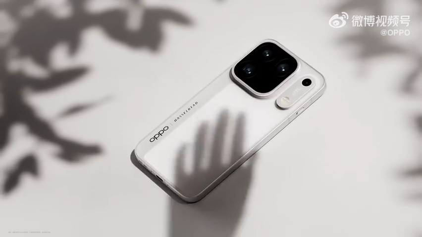
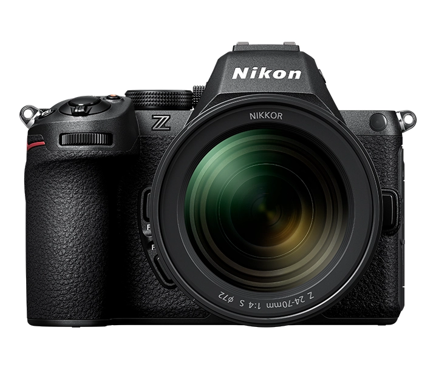
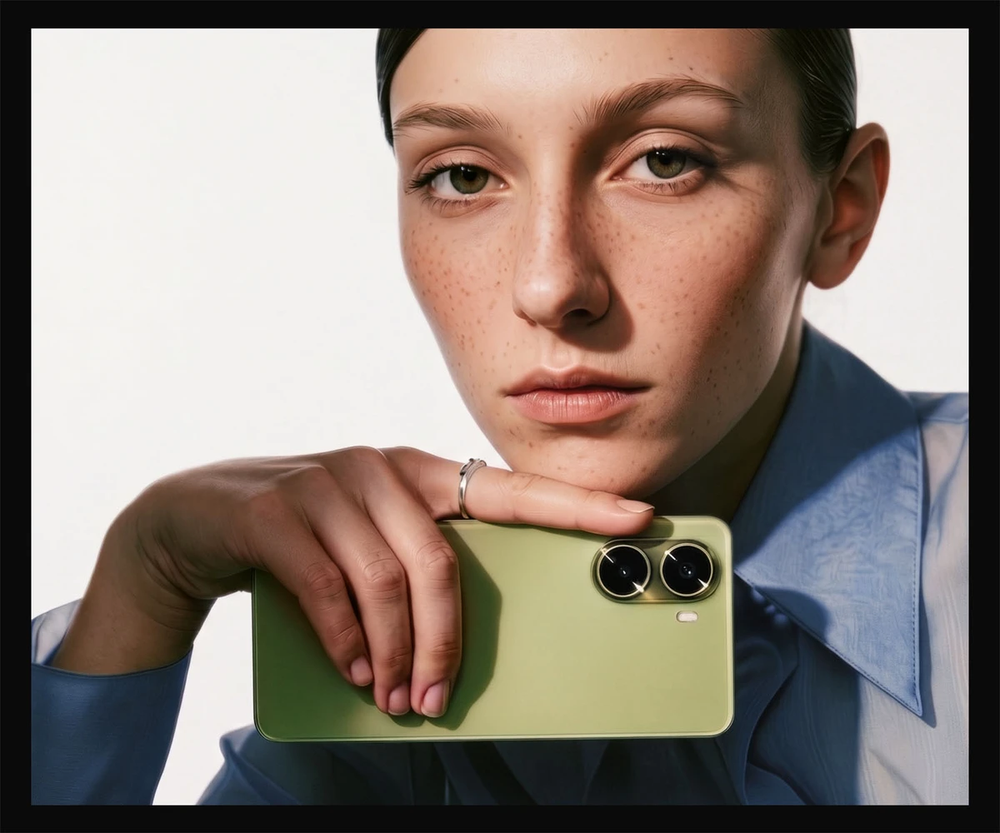
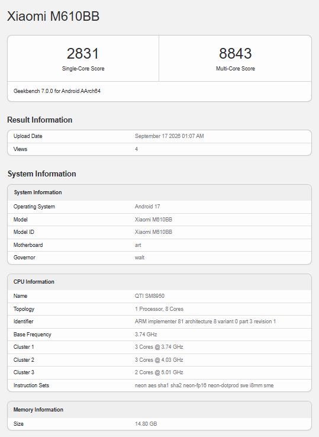
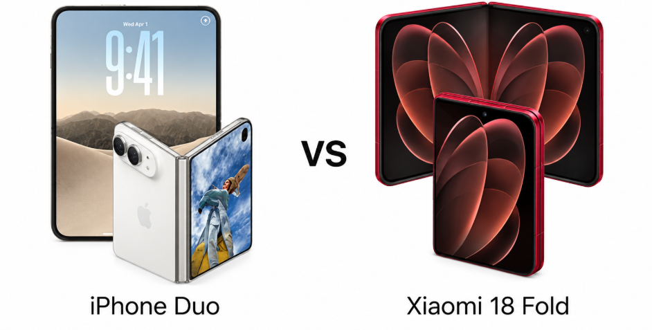
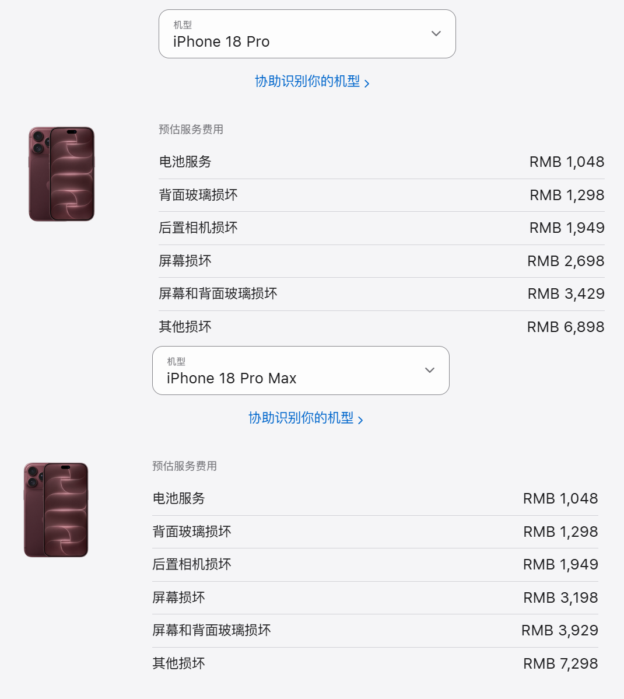
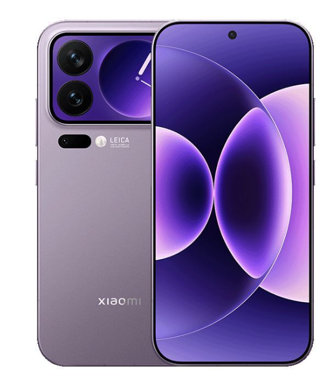
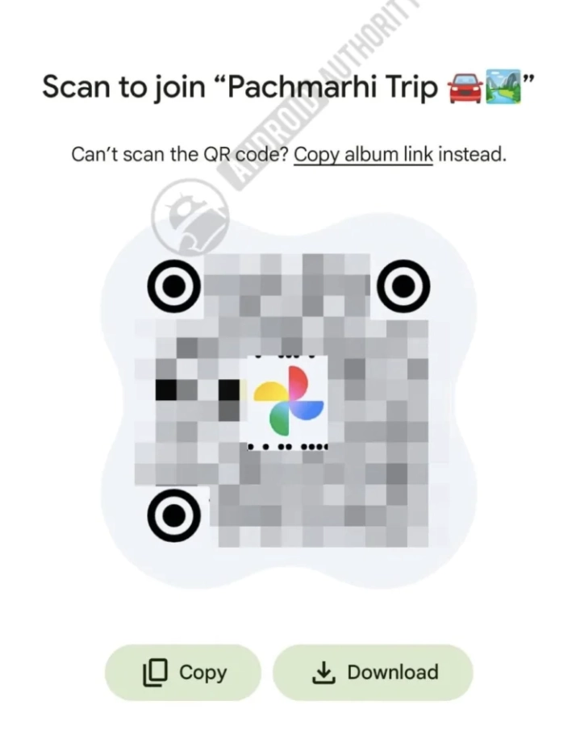
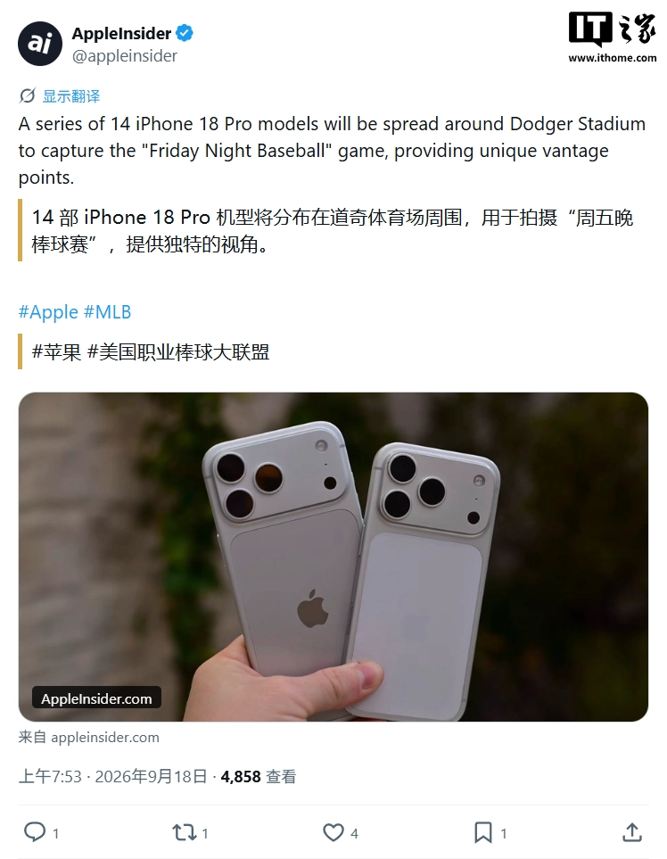

THE TECH EDIT
기술의 변화, 매일 한눈에.
카메라 · 스마트폰 · AI, 해외 테크 소식을 모아 전합니다.
최근 발행2026-09-19
새로 들어온 소식
LATEST STORIES
최신 뉴스
전체 3,106개 기사
vivo X300 Ultra 스마트폰 전 모델 가격 인상: 500~2,000위안 인상, 7,499위안부터
TSMC, 3년 만에 룽탄에 공장 재건: A14 이하 첨단 공정 목표, 첫 공장 2030년 완공 예정

루머, 솔리딤이 미국에 NAND 웨이퍼 공장 건설 고려 중... 기업 측 "아직 확정된 계획 없음"
QQ 뮤직, Apple iPhone Duo 폴더블 디스플레이 스마트폰 지원 공식 발표

Oppo Find X10 Pro Max, 출시 전 200MP 망원 카메라 상세 샘플 공개

Sony A7C 시리즈와 경쟁, Nikon 다음 주 Z5IIC 풀프레임 카메라 발표 예정
Nexperia(안세)와 타타 일렉트로닉스, 인도 반도체 생산 능력 활용 전략적 협력 체결

Mivi One 5G, 9월 24일 출시 앞두고 카메라 및 "수리 대신 교체" 서비스 공개

M610BB 스마트폰 포착: 퀄컴 6세대 스냅드래곤 8 엘리트 칩셋, Xiaomi 18 Pro로 예상
Lava Bold N4 Pro, 인도에서 새로운 보급형 5G 스마트폰으로 출시

아이폰 듀오 vs 샤오미 18 폴드: 400달러 더 비싸지만 더 좋을까?
영상 태풍 Tim, Apple 최초 폴더블 디스플레이 스마트폰 iPhone Duo 영상 촬영 시 너무 뜨거워 잡을 수 없다고 주장, 고객 서비스는 단일 기기 평가는 편파적이라고 답변

Apple iPhone 18 Pro 시리즈 배터리 보증 외 교체 비용 10달러 인상, 현재 1048위안
인도 반도체 신정책 발표 두 달 만에 최대 120억 달러 투자 유치

Huawei Pura X View 바 타입 스마트폰, 첫 주 활성화 판매량 약 28만 2천 대, 실제 판매 평균 가격 약 7,000위안

아너 700 프로, 샤오미와 유사한 후면 디스플레이 및 2억 화소 카메라 탑재할 수도

코드에 따르면 Google은 Google 포토 앱에 'QR 코드를 사용하여 로컬에 저장' 및 새로운 '컬렉션' 탭 기능을 도입하고 있습니다.

알리바바 다모 아카데미, 세계 최초 전문가급 범용 의료 영상 AI 모델 DAMO RADAR 오픈소스 공개: 146가지 이상의 질병 동시 식별, Science지 게재
ColorOS 17 업데이트, 당신의 오포, 원플러스, 리얼미 스마트폰에 언제 찾아올까

Apple iPhone 18 Pro, MLB 프로 야구 경기 생중계에 첫 사용: 14대 배치, 독특한 시점 제공
Apple iPhone 18 Pro/Max 시리즈, 오늘 공식 출시, 중국 출시 가격 9999위안부터
검색 결과가 없습니다
다른 검색어를 입력하거나 필터를 초기화해 보세요.